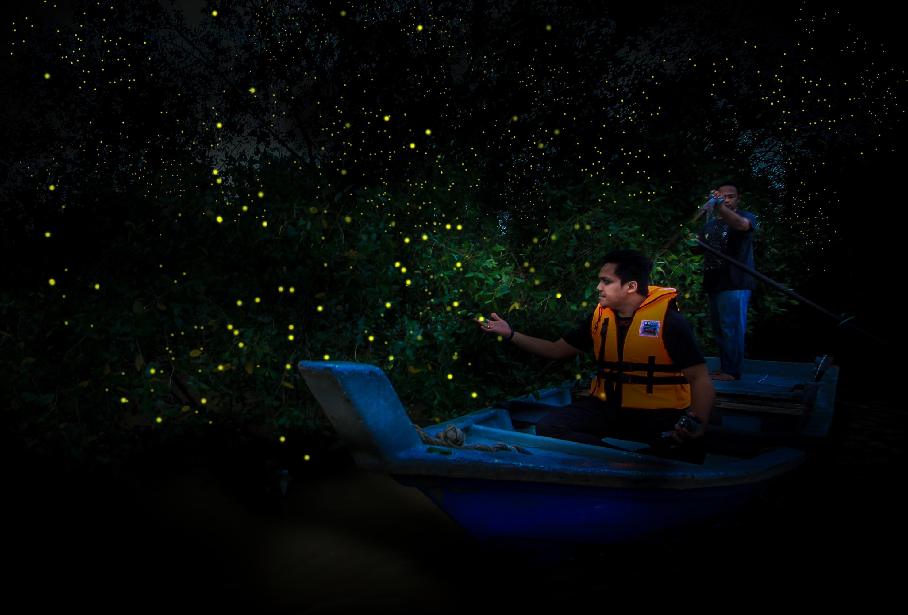

TravelBossKu Forum Page
Field Trip to Batu Caves
Students travel to Batu Caves for a field trip to see the magnificent limestone caves and Hindu temple complex.

A Day in Zoo Negara with my Kids
I spent a fun-filled day at Zoo Negara with my kids, marveling at diverse wildlife species and enjoying interactive experiences.

Firefly Tour with my Family
My family and I embarked on a memorable firefly tour, cruising along the river and witnessing the enchanting spectacle of synchronised blinking lights.